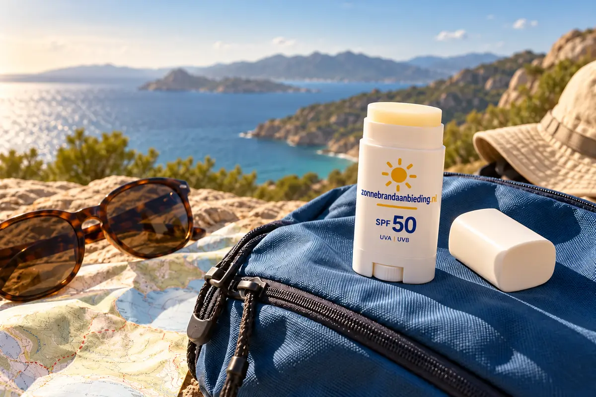

AttitudeBekijk hier
Attitude Sunly Zonnebrandstick SPF30 Parfumvrij 60 gr
€ 17,99per stuk
€ 29,98 per 100 ml
Van € 19,19 voor € 17,99
Compact, lekvrij en gericht aan te brengen: vooral handig voor neus, oren, lippen en snelle herhaling onderweg.

Een zonnebrandstick past gemakkelijk in een jaszak, sporttas of handbagage. Door de vaste vorm kun je gericht opnieuw aanbrengen zonder veel geknoei. Let wel op dat je voldoende product over de volledige zone verdeelt; één snelle veeg is niet automatisch genoeg.
€ 29,98 per 100 ml
Van € 19,19 voor € 17,99

€ 49,83 per 100 ml
2 × 45 gr voor € 44,85

€ 74,63 per 100 ml
2 × 20 gr voor € 29,85

€ 85,88 per 100 ml
2 × 20 gr voor € 34,35

€ 24,30 per 100 ml
6 × 36 gr voor € 52,49

€ 41,42 per 100 ml
2 × 36 gr voor € 29,82

€ 49,97 per 100 ml

€ 79,93 per 100 ml

€ 95,89 per 100 ml
3 × 18 gr voor € 51,78

€ 99,72 per 100 ml
€ 110,10 per 100 ml
2 × 20 gr voor € 44,04

€ 170,60 per 100 ml
Sticks worden vaak in gram verkocht. We rekenen gram voor de prijsvergelijking op dezelfde manier terug naar 100 eenheden. Vergelijk sticks vooral onderling, omdat hun toepassing anders is dan die van grote lichaamsverpakkingen.
Een compacte stick kan handig zijn voor opnieuw aanbrengen op blootgestelde plekken. Neem daarnaast een geschikt product voor het volledige gezicht mee.
Voor kleine zones wel, maar voor armen, benen en romp is een ruim smeerbare vorm meestal praktischer.
Algemene SPF- en smeeradviezen: KWF.